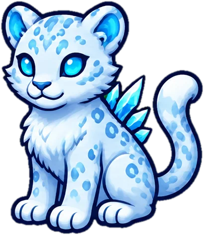

Tap a stage to read its story.
Chillkit is an impeccably white kitten with pale blue eyes, delicate ice-crystal ears that catch the marsh light, and a fluffy ringed tail it holds perfectly upright at all times. Small crystal-spike tufts jut from its cheeks. Found in the frost-pockets at the edge of the Poison Marsh, it stalks through the least toxic areas with enormous seriousness, pouncing on frost-pebbles. It refuses to get dirty, which in a marsh is a full-time occupation. The marsh-edge creatures find it inexplicably calming - its presence makes the toxic fog thin slightly.
Field note: Chillkit refuses to step on any surface that is not at least 60% frozen - it will wait indefinitely for the right path.
Poison Marsh. Chillkit and its family are found in the Poison Marsh. See everyone who lives there.
Share a Bond Food that matches its types to become friends. Chillkit loves:
A Bond Food is not a trick. It joins your spirit with the Kimuro's spirit, and only when it chooses you.
Print the Kimuro adventure packs: mazes, cards, a board game and Bond Mark medals.
See the printable packs